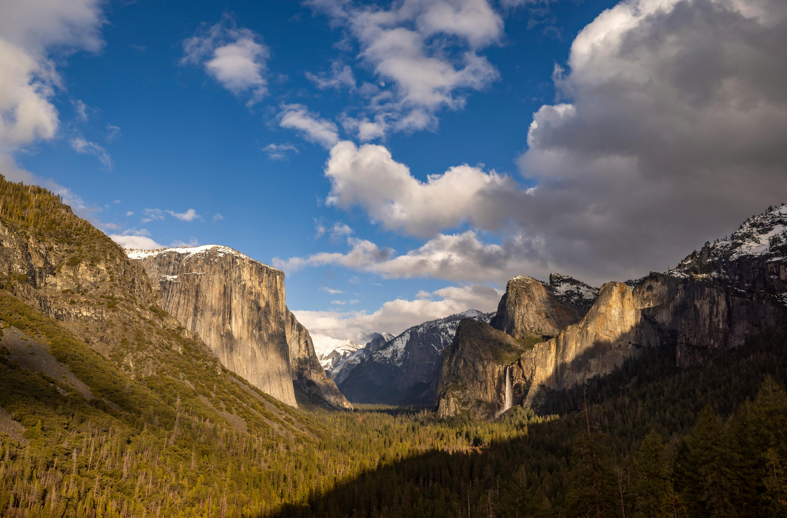

National Parks

The United States National Park System encompasses a vast network of natural landscapes and historical
landmarks, offering unparalleled beauty and a rich tapestry of America's heritage. Managed by the National Park
Service, these protected areas aim to preserve the country's ecological and cultural treasures for future
generations to enjoy and learn from.
Seattle Parks
Seattle's public parks are a verdant tapestry that weaves through the city's urban landscape, offering
residents and visitors alike a diverse range of natural and recreational spaces. From the expansive Discovery
Park to the serene Washington Park Arboretum, these green oases provide a peaceful escape from the bustling city
life, showcasing Seattle's commitment to preserving natural beauty and fostering community well-being.
Seattle Parks 1: Green Lake Park

Green Lake Park, nestled in the heart of Seattle, offers a serene oasis amidst urban life. This vibrant park is
renowned for its beautiful lake, perfect for kayaking and paddle boarding. With lush greenery, a 2.8-mile
walking trail, and abundant wildlife, it's a favorite spot for both relaxation and recreation among locals and
visitors alike.
Seattle Parks 2: Hing Hay Park

Hing Hay Park, located in the heart of Seattle's vibrant International District, serves as a cultural and
community hub. This urban oasis is known for its iconic red gateway, lush landscaping, and public art
installations, reflecting the rich heritage of the Asian American community. It's a space where locals and
visitors alike gather for events, relaxation, and celebration.